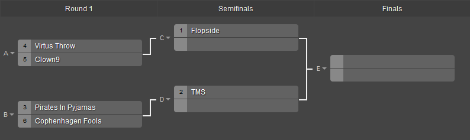

Välkommen till Xodia
Nytt på Xodia
Xodia byter eventuellt lokal till 2016!
Till Xodia 2016 har det pratats om att flytta lanet till gamla faurecia's lokaler i torsås.
Detta är på grund av att Xodia växer hela tiden, och för att kompensera måsste vi ha större lokaler med mer utrymme.
Mer info om detta kommer och adress till ny lokal kommer 2016.
Nya turneringar!
Tidigare turneringar har varit i spelen: Startcraft 2, Counter-Strike Global Offensive och Hearthstone
Men nu kommer ett till spel till listan: Dota 2!
Vi kommer också att byta till en hemsida som Hostar turneringar, med livestatus visualliserat med brackets
Här är ett exempel på hur brackets ser ut i turneringarna
